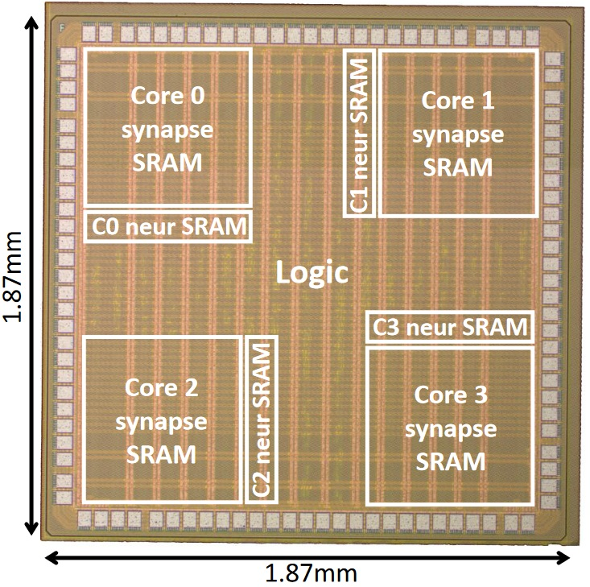

Whether inspired by biological intelligence or by artificial intelligence (AI) based on machine-learning techniques, the development of low-cost smart devices at the edge is a key stepping stone toward a distributed, off-cloud, always-on, and ambient form of adaptive processing. On the one hand, AI processor design aims at leveraging the successes of artificial neural networks (ANNs) to achieve best-of-class accuracy on specific tasks (top-down). However, current AI processors do not yet have the energy efficiency and versatility of biological neural networks. On the other hand, the field of neuromorphic engineering aims at replicating biological intelligence in silicon (bottom-up). Compared to conventional von-Neumann processors, a paradigm shift is implied for (i) the data representation, from a clocked multi-bit encoding to sparse space- and time-encoded binary spike events, and (ii) the architecture, from separated processing and memory to co-located neurons and synapses. Tackling efficiently this two-fold paradigm shift is still an open challenge, as highlighted by the diversity of approaches adopted worldwide for neuromorphic integrated circuit (IC) design. Indeed, all circuit design styles are being explored: asynchronous and synchronous digital, sub- and above-threshold analog, and mixed-signal. Yet, no clear trend emerges and recent calls from industry and academia stress a need for consolidating the field in a clear direction (e.g., see [Davies, Nat. Mach. Intel., 2019]).
I am a digital IC designer whose curiosity got trapped into the realms of neuromorphic engineering. I am working on aspects ranging from circuit design techniques (both digital and mixed-signal with emerging devices) to computer architecture, learning algorithms, and neuroscience. My research goals are
- to demonstrate a competitive advantage for neuromorphic computing devices compared to conventional neural network accelerators,
- to uncover a framework toward on-chip neuromorphic intelligence for adaptive edge computing.
To achieve these goals, I am investigating both the bottom-up and the top-down design approaches, as well as their synergies.
Projects
Below is a summary of my main projects. It covers ICs, algorithms, and the neuromorphic intelligence framework. For the associated publications and open-source repositories, see
Publications.
Chip gallery
The ODIN neuromorphic processor (2016-2020)
The ODIN 256-neuron 64k-synapse neuromorphic processor (28-nm CMOS) highlights how design constraints on the synapses can be released by offloading most synaptic computations at the neuron level. All synapses embed spike-driven synaptic plasticity (SDSP), while neurons are able to phenomenologically reproduce the 20 Izhikevich behaviors of cortical spiking neurons. At the time of publication, ODIN demonstrated the highest neuron and synapse densities, and the lowest energy per synaptic operation among digital designs.
Synapse block (ISCAS'17) Neuron block (BioCAS'17)
Chip (Trans. BioCAS'19) EMG classif. (Front. Neur.'20)
Open-source HW
The MorphIC neuromorphic processor (2017-2020)

The 2k-neuron 2M-synapse quad-core MorphIC SNN processor (65-nm CMOS) extends the ODIN core for large-scale integration with (i) a stochastic synaptic plasticity rule for online learning with high-density binary synapses, and (ii) a hierarchical spike routing network-on-chip (NoC) combining local crossbar, inter-core tree-based and inter-chip mesh-based routing, which achieves biologically-plausible neuron fan-in and fan-out values of 1k and 2k. Considering technology-normalized numbers, MorphIC further improves the density claim of ODIN.
Chip (ISCAS'19) Chip (Trans. BioCAS'19)
DVS classif. (Front. Neur.'20)
The SPOON event-driven CNN (2019-ongoing)
SPOON exploits input temporal coding to take advantage of the sparsity of spike-based image sensors for low-power always-on edge detection. Event-driven and frame-based computation are combined to maximize data reuse. SPOON demonstrates, for the first time, that a neuromorphic processor can reach a competitive accuracy-efficiency tradeoff compared to conventional task-specific ANN accelerators. It also embeds an optimized on-chip implementation of our DRTP algorithm, thereby providing on-the-fly adaptation to new features in incoming data at only ~15-% power and area overheads. These key results led to a best paper award at ISCAS 2020. The chip fabricated in 28-nm CMOS has since then been functionally validated, a journal extension is in preparation.
Pre-silicon results (ISCAS'20)
The ReckOn spiking recurrent neural network (2020-ongoing)
ReckOn demonstrates, for the first time, end-to-end on-chip learning over second-long timescales (no external memory accesses, no pre-training). It is based on a bio-inspired alternative to backpropagation through time (BPTT), the e-prop training algorithm, which has been modified to reduce the memory overhead required for training to only 0.8% of the equivalent inference-only design. This allows for a low-cost solution with a 0.45-mm² core area and a <50-µW power budget at 0.5V for real-time learning in 28-nm FDSOI CMOS, which is suitable for an always-on deployment at the extreme edge. Furthermore, similarly to the brain, ReckOn exploits the sensor-agnostic property of spike-based information. Combined with code-agnostic e-prop-based training, this leads to a task-agnostic learning chip that is demonstrated on vision, audition and navigation tasks.
Chip (ISSCC'22) Open-source HW
Algorithms
Direct Random Target Projection (2018-2021)
The computational and memory costs of neural network training should be minimized for adaptive edge computing. The two key constraints that preclude the standard backpropagation of error (BP) algorithm from being both hardware-efficient and biophysically-plausible are the weight transport problem and update locking. Based on the concept of feedback alignment, we propose the direct random target projection (DRTP) algorithm, which is purely feedforward and relies only on local gradient and weight information. It releases the two key issues of BP without compromising the training performance for tasks whose complexity is suitable for processing at the very edge.
Algorithm (Front. Neur.'21) Open-source code
Neuromorphic intelligence framework
First steps toward a framework for neuromorphic intelligence were taken in my PhD thesis, where bottom-up and top-down investigations allowed identifying guidelines for the design of efficient neuromorphic hardware, highlighting that each approach can naturally act as a guide to address the shortcomings of the other. These results were then taken a step further with an extensive review paper, whose preprint was just released.
PhD thesis Neuromorphic Intelligence (arXiv'21)
Selected publications and talks
For a full publication list together with citation data, please refer to my
Google Scholar profile. My main invited talks are also listed at the end of this section.
Journal papers
- C. Frenkel, "Sparsity provides a competitive advantage," Nature Machine Intelligence (News & Views), vol. 3, pp. 742-743, September 2021. doi:10.1038/s42256-021-00387-y
- C. Frenkel*, M. Lefebvre* and D. Bol, "Learning without feedback: Fixed random learning signals allow for feedforward training of deep neural networks," Frontiers in Neuroscience, vol. 15, no. 629892, February 2021. doi:10.3389/fnins.2021.629892
- E. Ceolini*, C. Frenkel*, S. B. Shrestha*, G. Taverni, L. Khacef, M. Payvand and E. Donati, "Hand-gesture recognition based on EMG and event-based camera sensor fusion: A benchmark in neuromorphic computing," Frontiers in Neuroscience, vol. 14, no. 637, August 2020. doi:10.3389/fnins.2020.00637
- C. Frenkel, J.-D. Legat and D. Bol, "MorphIC: A 65-nm 738k-synapse/mm² quad-core binary-weight digital neuromorphic processor with stochastic spike-driven online learning," IEEE Transactions on Biomedical Circuits and Systems, vol. 13, no. 5, pp. 999-1010, October 2019. doi:10.1109/TBCAS.2019.2928793
- C. Frenkel, M. Lefebvre, J.-D. Legat and D. Bol, "A 0.086-mm² 12.7-pJ/SOP 64k-synapse 256-neuron online-learning digital spiking neuromorphic processor in 28nm CMOS," IEEE Transactions on Biomedical Circuits and Systems, vol. 13, no. 1, pp. 145-158, February 2019. doi:10.1109/TBCAS.2018.2880425
Conference papers
- C. Frenkel and G. Indiveri, "ReckOn: A 28nm sub-mm² task-agnostic spiking recurrent neural network processor enabling on-chip learning over second-long timescales," Proc. of IEEE International Solid-State Circuits Conference (ISSCC), Feb. 2022. doi:10.1109/ISSCC42614.2022.9731734
- A. Basu*, C. Frenkel*, L. Deng* and X. Zhang*, "Spiking neural network integrated circuits: A review of trends and future directions," Proc. of IEEE Custom Integrated Circuits Conference (CICC), Apr. 2022.
- Y. Demirag, F. Moro, T. Dalgaty, G. Navarro, C. Frenkel, G. Indiveri, E. Vianello and M. Payvand, "PCM-trace: Scalable synaptic eligibility traces with resistivity drift of phase-change materials," Proc. of IEEE International Symposium on Circuits and Systems, May 2021. doi:10.1109/ISCAS51556.2021.9401446
- C. Frenkel, J.-D. Legat and D. Bol, "A 28-nm convolutional neuromorphic processor enabling online learning with spike-based retinas,'' Proc. of IEEE International Symposium on Circuits and Systems (ISCAS), October 2020. doi:10.1109/ISCAS45731.2020.9180440
- C. Frenkel, J.-D. Legat and D. Bol, "A 65-nm 738k-synapse/mm² quad-core binary-weight digital neuromorphic processor with stochastic spike-driven online learning," Proc. of IEEE International Symposium on Circuits and Systems (ISCAS), May 2019. doi:10.1109/ISCAS.2019.8702793
- C. Frenkel, J.-D. Legat and D. Bol, "A compact phenomenological digital neuron implementing the 20 Izhikevich behaviors," Proc. of IEEE Biomedical Circuits and Systems Conference (BioCAS), October 2017. doi:10.1109/BIOCAS.2017.8325231
- C. Frenkel, G. Indiveri, J.-D. Legat and D. Bol, "A fully-synthesized 20-gate digital spike-based synapse with embedded online learning," Proc. of IEEE International Symposium on Circuits and Systems (ISCAS), May 2017. doi:10.1109/ISCAS.2017.8050219
Preprints
- C. Frenkel, D. Bol and G. Indiveri, "Bottom-up and top-down neural processing systems design: Neuromorphic intelligence as the convergence of natural and artificial intelligence," arXiv preprint arXiv:2106.01288, June 2021.
Talk videos: see invited keynote links below
Invited talks
- Prophesee plenary talk - "Bottom-up and top-down neural processing systems design: Neuromorphic intelligence as the convergence of natural and artificial intelligence," October 2021 (online).
- Center for Electronics Frontiers and CDT-MINDS webinar (U. Southampton) - "Bottom-up and top-down neural processing systems design: unveiling the road toward neuromorphic intelligence," June 2021 (online).
- Keynote: tinyML EMEA technical forum - "Bottom-up and top-down neural processing systems design: unveiling the road toward neuromorphic intelligence," June 2021 (online).
Keynote video | Audience scores: 4.72/5 contents, 4.59/5 presentation
- Keynote: Neuro-Inspired Computational Elements (NICE) conference - "Bottom-up and top-down neuromorphic processor design: Unveiling roads to embedded cognition," March 2021 (online).
- Capo Caccia cognitive neuromorphic engineering workshop - "Neuromorphic computation: Introduction to the ODIN and MorphIC spiking neural network chips," April 2019 (Alghero, Italy).
Main Awards
- IBM Innovation Award 2021 - Awarded by the F.R.S./FNRS and the FWO national foundations for scientific research for the two best Ph.D. theses in the fields of ICT defended in Belgium in 2020.
- Nokia Bell Labs Scientific Award 2021 - Awarded by the F.R.S./FNRS and the FWO national foundations for scientific research for the best Ph.D. thesis in the fields of ICT defended in Belgium in 2020.
- UCLouvain/ICTEAM Best Thesis Award 2021 - Awarded by the UCLouvain ICTEAM Institute for the best Ph.D. thesis defended in 2020 in the fields of electrical engineering, computer science, and applied mathematics.
- NEUROTECH/NICE Best Early Researcher Presentation 2021 - Awarded by NEUROTECH consortium and the Neuro-Inspired Computational Elements (NICE) conference organization committee for the best presentation given by an early-career researcher (up to 10 years after the PhD).
- IEEE ISCAS 2020 Best Paper Award (Neural Networks and Neuromorphic Engineering track) - Awarded by the IEEE ISCAS Neural Networks and Neuromorphic Engineering technical committee for the best paper among the 77 accepted papers in the track.
- McKinsey Next Generation Women Leaders Award 2019 - Awarded by McKinsey & Company to 37 female students selected worldwide on the basis of
strong demonstrated achievements and leadership skills.
Academic Career and Education
Academic Career
Education
Academic Service
Most of my reviewing activity is also summarized on
my Publons profile.
TPC Chair: tinyML initiative on neuromorphic engineering (TBA) 2022
TPC:
- tinyML Research Symposium 2022
- tinyML EMEA 2022
- IEEE ESSCIRC/ESSDERC (Track 12) 2022
- IEEE ISLPED (Track 3.1) 2022
Chair:
- IEEE AICAS (special session) 2022
- IEEE ISCAS (lecture sessions) 2021
- IEEE MCSoC (neuromorphic track) 2019-2021
- IEEE APCCAS (neuromorphic track) 2020
Member:
- IEEE CAS society Neuromorphic Systems and Architecture technical committee (TC) 2021-Now
- IEEE SSCS society Ad Hoc committees on diversity and student representation 2021-Now
- IEEE ISCAS review committee member (RCM) 2021
Reviewer:
- IEEE Journals: JSSC, TCAS-I, TCAS-II, TBioCAS, JETCAS, TVLSI, TCAD, Trans. on Neural Networks and Learning Systems, Trans. on Cognitive and Developmental Systems, Trans. on Emerging Topics in Computing, IEEE Access.
- Non-IEEE Journals: Nature, Nature Electronics, Nature Machine Intelligence, Elsevier Neural Networks, Frontiers in Neuroscience.
- Conferences: IEEE ISCAS, BioCAS, S3S, APCCAS, MCSoC.
- Grants: NWO (National Foundation for Scientific Research of the Netherlands).